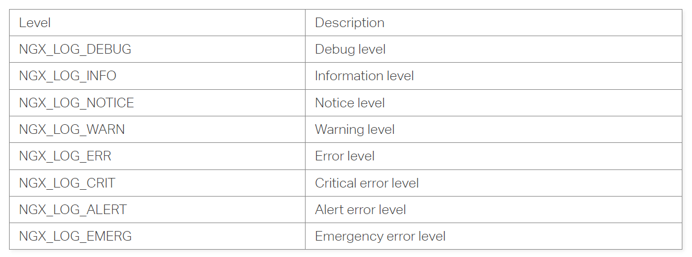

nginx学习
nginx主程序入口:
src/core/nginx.c 中的main函数
第一章 研究Nginx前的准备工作
1.1 Nginx是什么?
1.2 为什么选择Nginx
1.3 准备工作
1.4 编译安装Nginx
安装Nginx最简单的方式就是，进入nginx目录后执行以下3行命令:
./configure make make install
1.5 configure 详解
1.5.1 指定nginx安装位置
./configure --prefix=PATH
如果不指定的话，默认安装位置为: /usr/local/nginx
1.6 Nginx的命令行控制
默认情况下，Nginx被安装在目录 /usr/local/nginx中，其二进制文件路径为/usr/local/nginx/sbin/nginx，配置文件路径为/usr/local/nginx/conf/nginx.conf。
1.6.1 默认方式启动
/usr/local/nginx/sbin/nginx
这时，会读取默认路径下的配置文件: /usr/local/nginx/conf/nginx.conf。
1.6.2 另行指定配置文件的启动方式
/usr/local/nginx/sbin/nginx -c /tmp/nginx.conf
这时，会读取-c 参数后指定的nginx.conf配置文件来启动Nginx。
1.6.3 快速的停止服务
使用 -s stop可以强制停止Nginx服务。-s参数其实是告诉Nginx程序向正在运行的Nginx服务发送信号量，Nginx程序通过nginx.pid文件中得到master进程的进程ID，再向运行中的master进程发送TERM信号来快速的关闭Nginx服务。例如:
/usr/local/nginx/sbin/nginx -s stop
实际上，如果通过kill命令直接向nginx master进程发送TERM 或者 INT信号，效果是一样的。例如，先通过ps命令来查看nginx master的进程ID:
root@ubuntu:/home/superman/nginx/nginx-1.22.1# ps -ef | grep nginx root 23449 11417 0 23:43 ? 00:00:00 nginx: master process /usr/local/nginx/sbin/nginx nobody 23450 23449 0 23:43 ? 00:00:00 nginx: worker process
接下来直接通过kill命令来发送信号:
kill -s SIGTERM 23449
或者
kill -s SIGINT 23449
上述两条命令的效果与执行 /usr/local/nginx/sbin/nginx -s stop是完全一样的。
1.6.4 “优雅”的停止服务
如果希望Nginx服务可以正常的处理完当前所有请求再停止服务，那么可以使用-s quit参数来停止服务。例如:
/usr/local/nginx/sbin/nginx -s quit
该命令与快速停止Nginx服务是有区别的。当快速停止服务时，worker进程与master进程在收到信号后会立刻跳出循环，退出程序。而“优雅”的停止服务时，首先会关闭监听端口，停止接收新的连接，然后把当前正在处理的连接全部处理完，最后再退出进程。
与快速停止服务相似，可以直接发送QUIT信号给master进程来停止服务，其效果与执行 -s quit命令是一样的。例如:
kill -s SIGQUIT <nginx master pid>
如果希望“优雅”的停止某个worker进程，那么可以通过向该进程发送WINCH信号来停止服务。例如:
kill -s SIGWINCH <nginx worker pid>
1.6.5 使运行中的Nginx重读配置项并生效
使用-s reload参数可以使运行中的Nginx服务重新加载nginx.conf文件。例如:
/usr/local/nginx/sbin/nginx -s reload
事实上，Nginx会先检查新的配置项是否有误，如果全部正确就以“优雅”的方式关闭，再重新启动Nginx来实现这个目的。类似的，-s是发送信号，任然可以用kill命令发送HUP信号来达到相同的效果。
kill -s SIGHUP <nginx master pid>
1.7 Nginx 源码结构
Nginx 源码 src 文件夹的目录结构如下所示:
. ├── core ├── event │ └── modules ├── http │ ├── modules │ │ └── perl │ └── v2 ├── mail ├── misc ├── os │ └── unix └── stream
-
core文件夹用于存储Nginx核心代码，其中有Nginx内部自定义的数据结构，例如 字符串、数组、链表、散列表、队列、基数树以及红黑树等。另外还有Nginx核心结构体，例如用于与客户端连接的
ngx_connection_t，用于配置解析的ngx_conf_t，用于缓存的ngx_buf_t。Nginx入口函数main位于 nginx.c文件中。 -
event文件夹存储事件处理模块相关的代码。modules存储了I/O多路复用相关的代码，例如 select、epoll、poll、kqueue等。Nginx可以根据不同的系统选择不同的方案以实现性能最大化。
-
http文件夹包含Nginx处理HTTP请求时所需要的相关模块代码。
-
除了可以作为HTTP服务器外，Nginx还可以作为邮件服务器。相关实现可以参考mail文件夹。
-
misc文件夹包含两个文件:
ngx_cpp_test_module.cpp与ngx_google_perftools_module.c。其中,ngx_cpp_test_module.cpp用于测试Nginx中引用的头文件是否与C++兼容，ngx_google_perftools_module.c用于支持gperftools的实现。gperftools是谷歌开源的性能分析工具，读者可以自行查阅相关资料。 -
os文件夹包含跨平台实现的相关代码。
-
stream 文件夹包含Nginx支持TCP反向代理功能的具体实现。
第二章 Nginx的配置
2.1 运行中的Nginx进程间的关系
2.2 Nginx 配置的通用语法
2.3 Nginx服务的基本配置
2.3.1 用于调试进程和定位问题的配置项
2.3.1.1 error 日志的设置
语法: error_log /path/file level;
默认: error_log logs/error.log error;
error 日志是定位Nginx问题的最佳工具，我们可以根据自己的需求妥善设置error日志的路径和级别。
/path/file参数可以是一个具体的文件，例如，默认情况下是 /logs/error.log文件，最好将它放到一个磁盘空间足够大的位置；/path/file也可以是 /dev/null，这样就不会输出任何日志了，它也是关闭error日志的唯一手段；/path/file也可以是 stderr，这样日志会输出到标准错误文件中。
level是日志的输出级别，取值范围是 debug、info、notice、warn、error、crit、alert、emerg，从左至右级别依次增大。当设定为一个级别时，大于或等于该级别的日志都会被输出到 /path/file文件中，小于该级别的日志则不会输出。例如，当设定为error级别时，error、crit、alert、emerg级别的日志都会输出。
如果设定的日志级别是 debug，则会输出所有的日志，这样数据量会很大，需要预先确保 /path/file所在磁盘有足够的磁盘空间。
注意 如果日志级别设定到debug，必须在 configure 时加入 --with-debug 配置项。
2.3.1.2 Nginx打印日志函数
https://www.nginx.com/resources/wiki/extending/api/logging/
- ngx_log_error函数
- 函数功能
将错误日志打印到NGINX的日志文件中。
- 函数原型
c
void ngx_log_error(ngx_uint_t level, ngx_log_t *log, ngx_err_t err, const char *fmt, ...)
- 参数
- level
日志等级
- log
指向NGINX日志对象的指针
- err
操作系统的错误码（0表示不适用）
- fmt
日志内容
日志等级取值如下: 
2.4 用HTTP核心模块配置一个静态Web服务器
2.5 用 HTTP proxy module 配置一个反向代理服务器
第三章 配置文件解析
Nginx的配置指令可以分为两大类: 配置块(如 events/http/server/location) 单条指令(如 worker_processes/root/rewrite) - 配置块 配置块可以嵌套，如http配置块中可以嵌套server配置块，server配置块中还可以嵌套location配置块 - 单条指令 单条指令可以同时配置在不同的配置块，如root指令可以同时配置在http/server/location配置块中 配置块、配置块的嵌套以及指令的多出配置导致配置文件的解析、存储以及查找比较复杂。
3.1 配置文件简介
下载Nginx源码后，配置文件存储在/usr/local/nginx/conf/nginx.conf中，实例如下:
#user nobody;
master_process on;
worker_processes 2;
error_log logs/error.log debug;
events {
use epoll;
worker_connections 1024;
}
http {
#log_format main '$remote_addr - $remote_user [$time_local] "$request" '
# '$status $body_bytes_sent "$http_referer" '
# '"$http_user_agent" "$http_x_forwarded_for"';
#access_log logs/access.log main;
server {
listen 80;
server_name localhost;
location / {
root html;
index index.html index.htm;
}
}
Nginx按照上述配置启动之后会在80端口监听客户端请求，接收到HTTP请求并转发给上游FPM进程处理后，将处理结果返给客户端。各配置指令介绍如下。
- worker_processes
配置Worker进程数目，其值可以是具体的数字或者auto，一般等于CPU核数。通常，其会结合worker_cpu_affinity来设置CPU亲和力，使得Worker进程绑定到特定CPU上执行。
- error_log
配置错误日志输出方式以及日志级别。通常，我们会将错误日志输出到某一文件。日志级别从低到高划分为debug/info/notice等，默认级别为 error
- events/http
配置块，用于区分配置类型。events指令块的内部指令均用于配置事件相关处理，http指令块的内部指令均用于HTTP请求处理
- use
用于配置使用的 I/O 多路复用模型，如epoll/kqueue等。如果没有配置use，Nginx会检测当前操作系统支持的I/O多路复用模型
- worker_connections
用于配置每个Worker进程最多可建立的连接数。由此可得Nginx实例最多可建立的连接数目为 worker_connections * worker_processes，包括与客户端建立的网络连接、与上游Upstream建立的网络连接以及用于监听的socket描述符
- log_format
用于配置日志输出格式，main定义了 日志格式的名称，$remote_addr等变量为Nginx内部定义的变量，此处用于定义日志输出格式
- access_log
用于配置Nginx访问日志，结果输出到文件logs/access.log。main定义了使用的日志格式名称
- server
配置块，用于配置一个虚拟服务器
- listen
用于配置监听的IP以及端口，该指令可选项非常多，比如选项 default_server 用于配置当前虚拟服务器为默认服务器（当某HTTP请求的Host与所有服务器的server_name都没有匹配成功时，会使用默认服务器处理）；选项 backlog 用于配置TCP半连接队列以及全连接队列最大限制（同时受限于内核参数）
- server_name
用于配置基于名称的虚拟服务器，可使用全名称www.example.com 或者通配符 *.example.com。只有当HTTP请求的Host与该服务器名称匹配成功时，才会由该服务器处理HTTP请求（默认服务器除外）
- location
用于匹配指定的请求URI，匹配成功时才会选择该location配置处理HTTP请求。location匹配方式支持正则匹配、最大前缀匹配以及精确匹配等
- fastcgi_pass
将HTTP请求按照FastCGI协议转发给上游FPM进程处理，将HTTP请求按照HTTP转发给上游服务器
3.1.1 结构体 ngx_command_t
Nginx配置文件的解析是分散到各个模块的。每个模块都有一个commands数组，数组类型为ngx_command_t，用于存储该模块可以解析的所有配置指令。结构体ngx_command_t定义如下:
struct ngx_command_s {
ngx_str_t name;
ngx_uint_t type;
char *(*set)(ngx_conf_t *cf, ngx_command_t *cmd, void *conf);
ngx_uint_t conf;
ngx_uint_t offset;
void *post;
};
各字段含义如下。
- name
配置指令名称，如proxy_pass
- type
> 指令类型。指令类型分为4种:
> 表示指令可配置位置
> 用于检验参数数目
> 表明指令是单条指令还是配置块
> 其他
- 第1种指令类型表示指令可配置位置。什么是可配置位置? 我们以实例说明。比如:
- 指令 worker_processes 、 events/http 只能在配置文件进行配置，不能在任何配置块中配置，其类型为 NGX_MAIN_CONF
- 指令 worker_connections/use 只能配置在events配置块中，其类型为 NGX_EVENT_CONF
- 指令 server 只能配置在http配置块中，其类型为 NGX_HTTP_MAIN_CONF
- 指令 listen/server_name 只能配置在server配置块中，其类型为 NGX_HTTP_SRV_CONF
- 指令 proxy_pass/fastcgi_pass 只能配置在location配置块中，其类型为 NGX_HTTP_LOC_CONF
> **注意**
> 指令类型按位标记。当一条指令可以同时配置在多个位置时，指令类型支持按位或运算，
> 比如root指令，可以配置在 `http/server/location` 配置块，因此其类型为
> NGX_HTTP_MAIN_CONF|NGX_HTTP_SRV_CONG|NGX_HTTP_LOC_CONF
- 第2种指令类型用于检验参数数目，主要有下面几种
- NGX_CONF_TAKEn
表示该指令必须有n个参数
- NGX_CONF_TAKEmn
表示该指令必须有 m 或者 n 个参数
- NGX_CONF_NOARGS
表示该指令没有参数
- NGX_CONF_1MORE
表示该指令至少有1个参数
- NGX_CONF_2MORE
表示该指令至少有2个参数
- NGX_CONF_ANY
表示该指令参数数目任意
- 第3种指令类型表明指令是单条指令还是配置块，如 `NGX_CONF_BLOCK` 表示该指令为一个配置块。
- 第4种是一些其他指令类型，比如NGX_CONF_FLAG表示该指令为一个标识类指令，只能配置 `on/off`; NGX_DIRECT_CONF表示该指令的存储地址可直接获取，不需要再额外分配
- set 函数指针，指向该配置对应的处理函数
- conf 和 offset 表示偏移量，通过偏移量可定位到该配置的存储地址
- post 可以指向多种结构
3.2 主函数 ngx_conf_parse
配置解析的主函数，即入口函数是ngx_conf_parse(ngx_conf_t *cf, ngx_str_t *filename)，输入参数filename表示配置文件路径，如果值为NULL表明此时解析的是配置块；cf即当前待处理指令，类型为ngx_conf_t。函数ngx_conf_parse主要通过调用ngx_conf_handler函数处理并解析指令。
3.2.1 结构体 ngx_conf_t
结构体ngx_conf_t主要字段如下:
struct ngx_conf_s {
char *name; // 当前读取到的配置名称
ngx_array_t *args; // 当前读取到的配置参数
void *ctx; // 上下文
ngx_uint_t module_type; // 模块类型
ngx_uint_t cmd_type; // 指令类型
};
各个字段说明如下:
- name
类型为字符串，存储当前读取到的配置的名称
- args
类型为数组，存储当前读取到的配置的所有参数
- ctx
类型为void *指针，配置在解析后，结果通常会存储在某结构体的某字段。通过ctx字段，我们可以获取该结构体地址
- module_type 和 cmd_type
表示当前配置可以由那些模块解析以及当前配置的指令类型。读取到某配置时，需要遍历所有模块的指令数组，查找当前配置对用的ngx_command_t。通过这两个字段可以快速过滤掉那些不能处理当前配置的模块以及不匹配的结构体。
nginx stream模块
Nginx 的 TCP/UDP 代理功能的模块分为核心模块和辅助模块、核心模块 stream 需要在编译配置时增加"--with-stream"参数进行编译。
https://www.w3schools.cn/nginx/nginx_proxy_stream.asp https://blog.csdn.net/carefree2005/article/details/121229818
2294项目的nginx
nginx 安装路径: /usr/local/nproxy 日志路径: /usr/local/nproxy/logs info.log 和 error.log 使用GDB调试nginx: https://blog.csdn.net/sunxiaopengsun/article/details/73038959
nginx 启动
./configure --prefix=/usr/local/nginx \ --with-debug \ --with-cc-opt='-O0 -g' \
其中 --with-cc-opt='-O0 -g' 是不对编译进行优化和打开调试开关
报错 nginx: [emerg] getpwnam(“nobody“) failed
groupadd -f nobody useradd -g nobody nobody ./nginx -s reload
gdb调试
参考链接: https://wenfh2020.com/2021/06/25/gdb-nginx/
-
编译时关掉编译优化并添加
-g选项 -
gdb /usr/local/nginx/sbin/nginx
说明: 使用
-tui参数可以将调试窗口分为两部分：上面是源码，下面是调试信息，使用Ctrl+n/Ctrl+p或者方向键进行翻页。 -
设置 gdb调试子进程模式
set follow-fork-mode childset detach-on-fork off -
设置断点
b ngx_event_accept -
运行
r -
用talent测试
talent 127.0.0.1 80